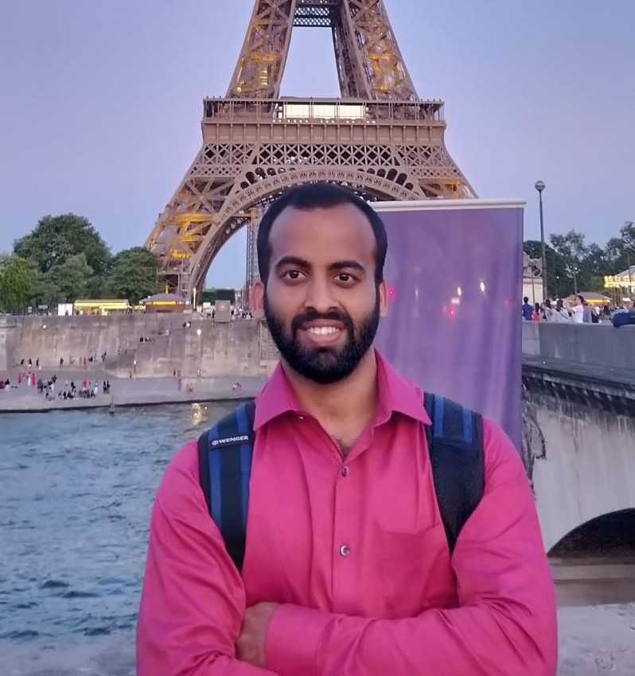

|  |
Contact Information
Laboratoire des signaux et systèmes (L2S),
CentraleSupélec, University of Paris-Saclay.
Q1
Q2
Email: sreejith.sreekumar@centralesupelec.fr
|
Biography
I am a CNRS researcher at the Laboratoire des signaux et systèmes (L2S) at
CentraleSupélec since February 2025. My
research lies at the intersection of information theory,
machine learning, mathematical statistics and quantum information science.
Current topics of interest include study of distributed statistical inference problems under
constraints, estimation of information and divergence measures, quantum hypothesis testing and estimation,privacy and security, and wireless communications.
I obtained my Ph.D. from the Electrical and Electronic Engineering Dept. at Imperial
College London in 2019. Then, I spent a few years as a postdoctoral associate at the School of Electrical
and Computer Engineering , Cornell University, and at Institute for
Quantum Information, RWTH Aachen University from 2023-25. I obtained my Masters degree in Communications Engineering from
Indian Institute of Technology Bombay and Bachelors degree in Electrical Engineering from
National Institute of Technology Calicut.
Recent preprints and publications (updated list available on Google
Scholar)
S. Sreekumar, C. Hirche, H-C. Cheng, and M. Berta, “Distributed Quantum Hypothesis Testing
under Zero-rate
Communication Constraints” Annales Henri Poincaré, 2025.
S. Sreekumar and K. Kato, “Deviation Inequalities for Rényi Divergence Estimators via Variational Expression”
arXiv:2508.09382 , 2025.
T. Rippchen, S. Sreekumar and M. Berta, “Locally-Measured Rényi Divergences”
IEEE
Transactions on Information Theory, vol. 71, no. 8, pp. 6105 - 6133, 2025.
|